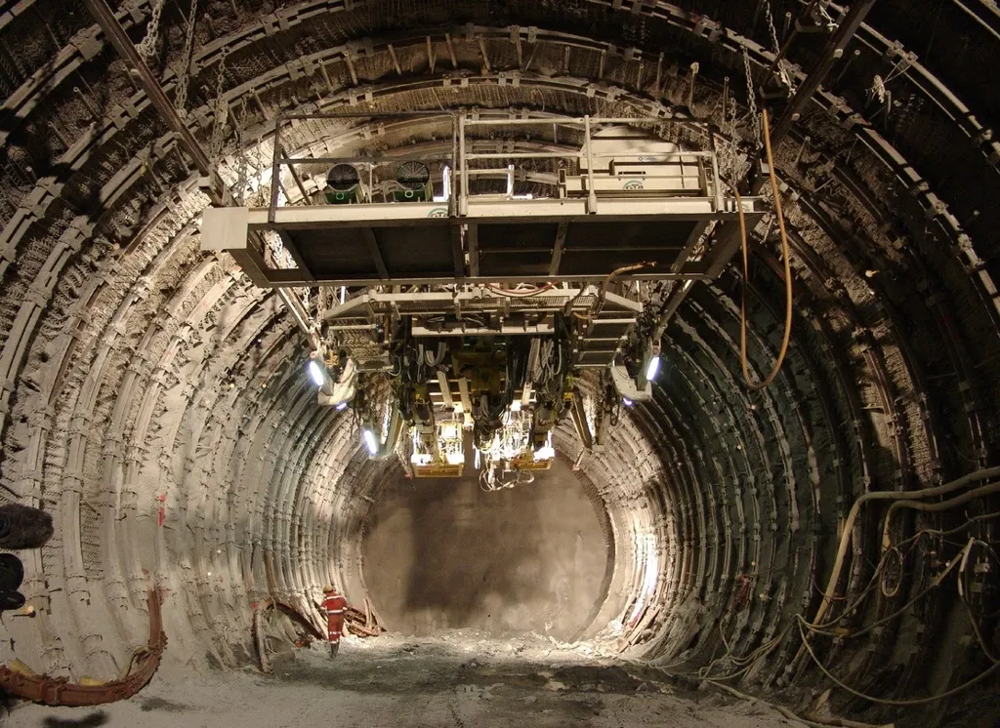

Gotthard Base Tunnel.
Head of Contract Management, client side

- Period
- 2011-2013
- Project costs
- approx. CHF 13 billion (contract IG GBTS approx. CHF 400 million)
- Client
- AlpTransit Gotthard Ltd., Lucerne, Switzerland
- Location
- Lots Sedrun, Faido, Bodio, Switzerland
The project
The Gotthard Base Tunnel is the heart of Switzerland’s new transalpine rail network. The system has the character of a flat track and is designed for speeds of up to 155 mph. It consists of 2 single-track tunnel tubes, each 57 km long. In addition to the two tunnel tubes, underground emergency stops with tunnel changes, so-called multifunction stations, are also foreseen. In order to reduce the construction time, the tunnels were each driven from the portals and three intermediate attacks. In Sedrun, an 800 m deep shaft and several caverns were previously constructed.
TA Sedrun was excavated by blasting, Section Sedrun and Sections Faido and Bodio by TBM. The excavation protection (outer shell) consists of shotcrete and anchors; the inner shell is cladding concrete.
Challenges
One main challenge was the geology. There were several different geological zones at the Gotthard Base Tunnel. The assessments of experienced geologists and sample borings provided a certain security. But what the excavators actually met at the tunnel face nobody could predict with absolute certainty. It is not for nothing that mining jargon says: “It’s dark in front of the pickaxe.”
The other big challenge was to master and fend off the contractor’s supplementary claims. Due to the almost unpredictable geology and the associated construction disturbances, there were often complex rounds of negotiations, but all of them were finally agreed without a single legal dispute.
My role in the project
Head of Contract Management, client side, responsible for:
- Budget Management
- Contract Negotiation and Management
- Project Management
- Department lead with a 20-person staff of civil engineers and geologists
Images
8 images from the project, click to enlarge
